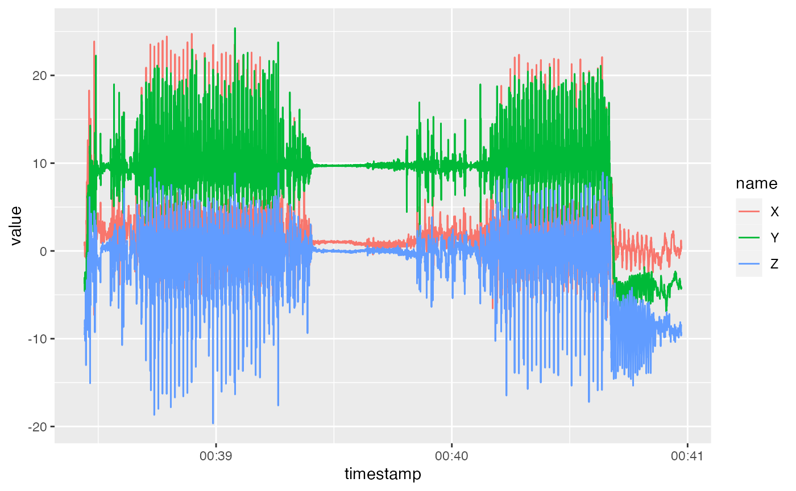
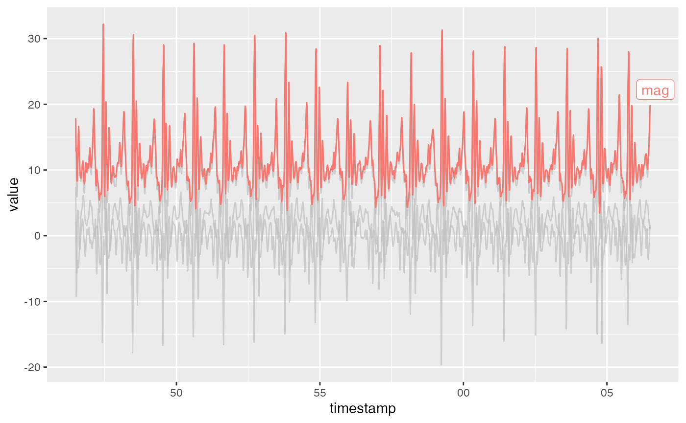
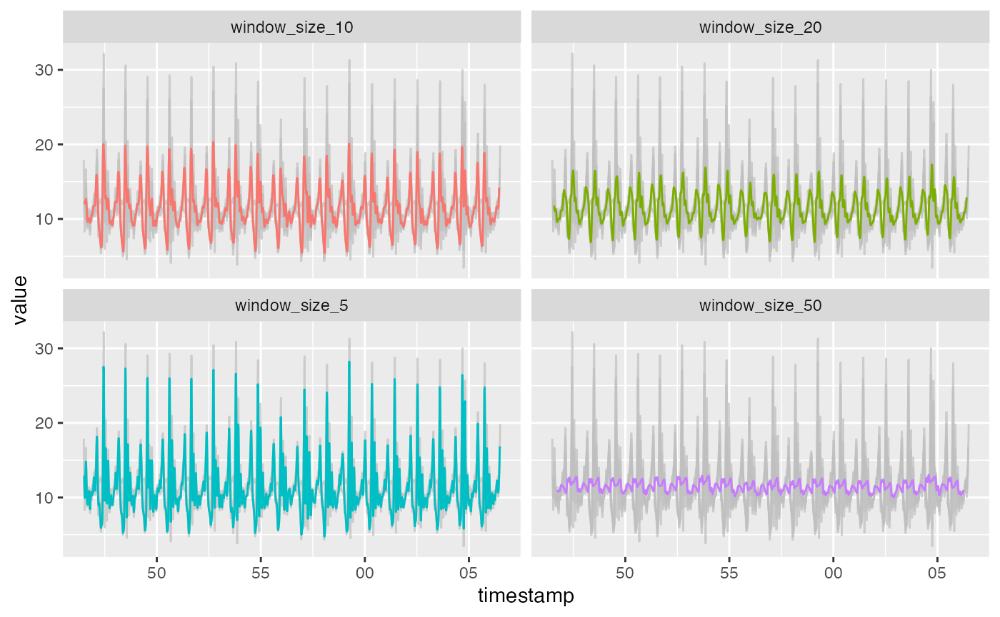
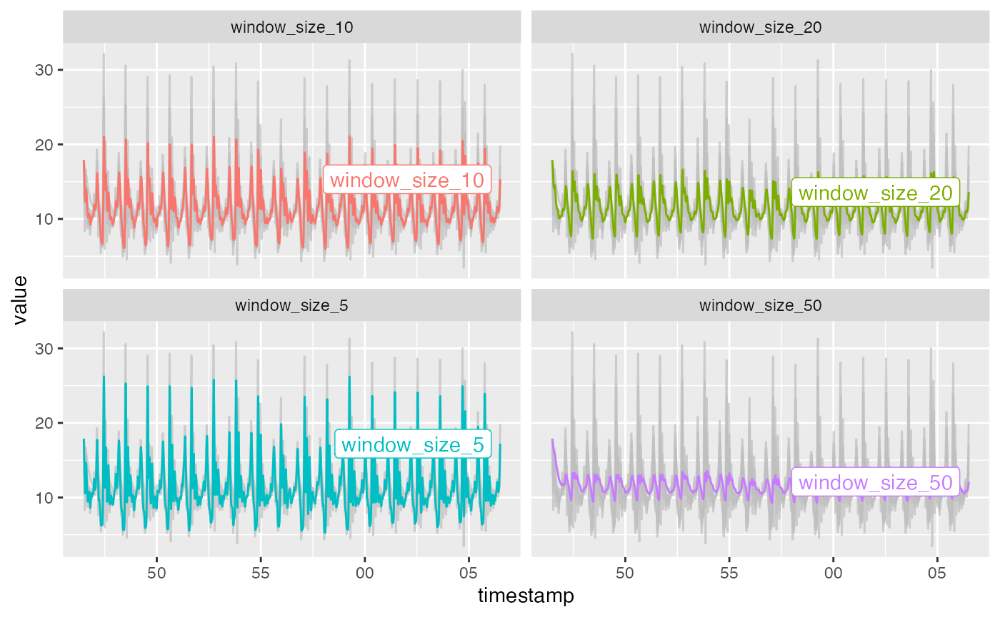
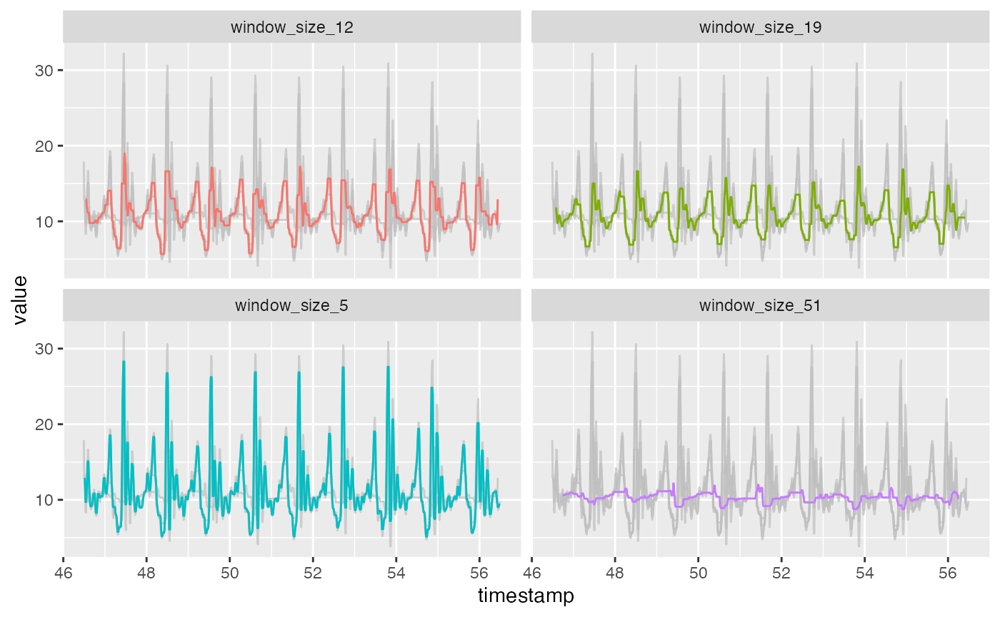
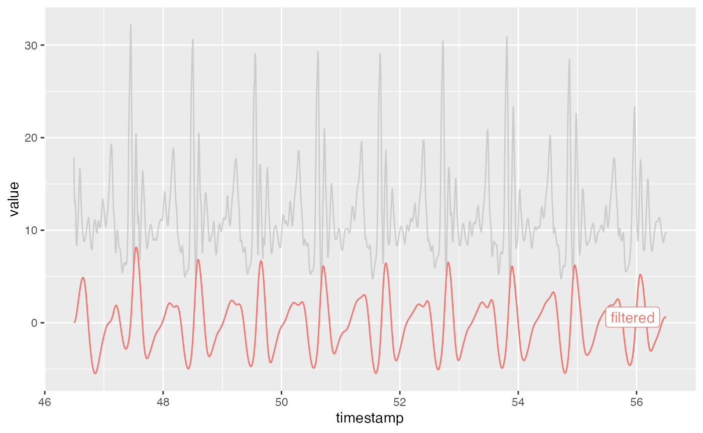
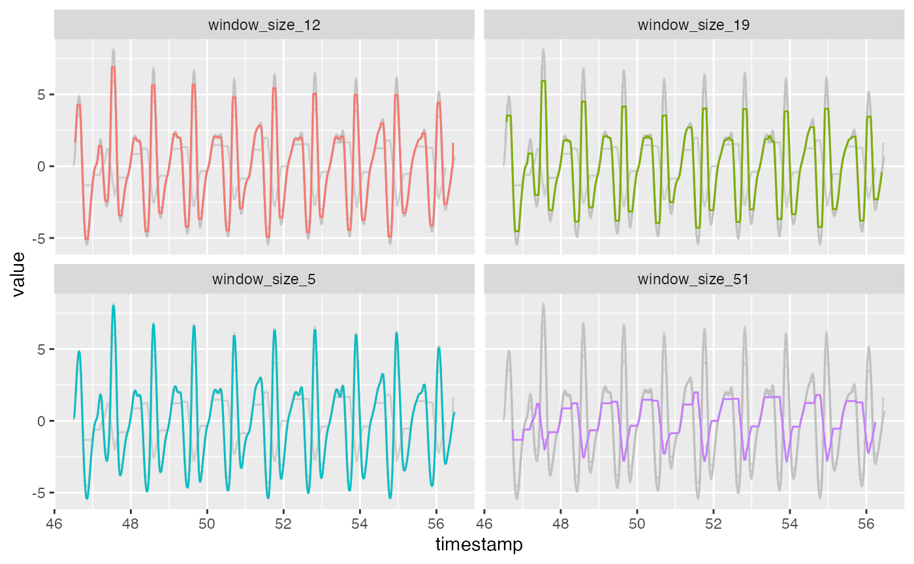
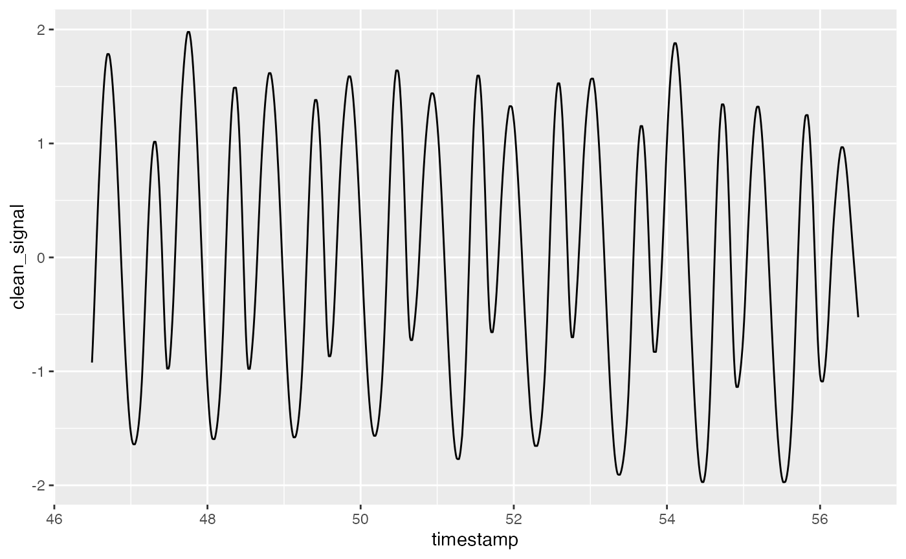

Assignment 1: Step Detection
assignment1.RmdIntroduction
In this assignment, we want to use accelerometer data collected from our own iOS devices to develop a simple step detection algorithm.
We used the DataLogger app to access the accelerometer and sent the data automatically to our laptops. Now, we’ll implement what we learned in class to detect steps.
Cursory Glance
acc <- read_datalogger_file(system.file("extdata", "acce.csv", package = "HINF5300"))Here is what the data looks like:
head(acc)
#> # A tibble: 6 × 4
#> timestamp X Y Z
#> <dttm> <dbl> <dbl> <dbl>
#> 1 2022-09-22 00:38:26 0.736 -3.71 -9.57
#> 2 2022-09-22 00:38:26 0.865 -3.38 -9.50
#> 3 2022-09-22 00:38:26 0.969 -3.04 -9.46
#> 4 2022-09-22 00:38:26 0.875 -3.15 -9.34
#> 5 2022-09-22 00:38:26 0.899 -3.37 -9.24
#> 6 2022-09-22 00:38:26 0.767 -3.53 -9.01Let’s check the sampling rate:
acc %>%
mutate(minute = lubridate::minute(timestamp)) %>%
group_by(minute) %>%
summarise(n())
#> # A tibble: 3 × 2
#> minute `n()`
#> <int> <int>
#> 1 38 3349
#> 2 39 5996
#> 3 40 5834For minute 39 we have just under 6000 samples, per minute, which comes down to 100Hz.
sampling_rate <- 100This is a good sampling rate. Let’s plot the full data set:

Calculate the Magnitude of Acceleration
To combine the signal from different axes, we calculate the magnitude of the combined vectors.
acc <-
acc %>%
mutate(mag = sqrt((X^2 + Y^2 + Z^2)))
acc %>%
slice(2000:4000) %>%
pivot_longer(-timestamp) %>%
ggplot(aes(x=timestamp, y=value)) +
geom_line(aes(color=name)) +
gghighlight(name == "mag")
#> label_key: name
Time Domain Smoothing
We can try a number of time domain smoothing techniques to remove noise.
Moving Average filter
Here we use the moving average filter from the zoo
package with a number of different window sizes.
window_sizes <- c(5, 10, 20, 50)
column_names <- paste0("window_size_", window_sizes, sep="")
acc %>%
slice(2000:4000) %>%
bind_cols({
vec <- pull(., mag)
purrr::map_dfc(window_sizes, ~ zoo::rollmean(vec, .x, fill=NA)) %>%
setNames(column_names)
}) %>%
select(timestamp, matches("mag|window")) %>%
pivot_and_plot(timestamp) +
gghighlight(str_detect(name, "window")) +
facet_wrap(~name)
Not great, but we can look at other smoothing methods too.
EWMA
Here’s an exponentially weighted moving average:
window_sizes <- c(5, 10, 20, 50)
column_names <- paste0("window_size_", window_sizes, sep="")
acc %>%
slice(2000:4000) %>%
bind_cols({
vec <- pull(., mag)
purrr::map_dfc(window_sizes, ~ pracma::movavg(vec, .x, type="e")) %>%
setNames(column_names)
}) %>%
select(timestamp, matches("mag|window")) %>%
pivot_and_plot(timestamp) +
gghighlight(str_detect(name, "window")) +
facet_wrap(~name)
#> New names:
#> • `` -> `...1`
#> • `` -> `...2`
#> • `` -> `...3`
#> • `` -> `...4`
#> Warning: Tried to calculate with group_by(), but the calculation failed.
#> Falling back to ungrouped filter operation...
#> label_key: name
Median Filter
Lastly, we’ll try the median filter
window_sizes <- c(5, 12, 19, 51)
column_names <- paste0("window_size_", window_sizes, sep="")
acc %>%
slice(2000:3000) %>%
bind_cols({
vec <- pull(., mag)
purrr::map_dfc(window_sizes, ~ zoo::rollmedian(vec, .x, fill=NA)) %>%
setNames(column_names)
}) %>%
select(timestamp, matches("mag|window")) %>%
pivot_and_plot(timestamp) +
gghighlight(str_detect(name, "window")) +
facet_wrap(~name)
These methods aren’t doing a fantastic job, but we can keep trying in the frequency domain
Frequency Domain Data
We can use the stats::fft function to convert to the
frequency domain:
So what we’re seeing here are the high amplitudes of noise at the very high and very low frequencies. We can implement a filter to get rid of slow peaks and jumpy peaks.
cutoff <- c(0.8, 3.5)
b_filt <- signal::butter(
3,
c(
cutoff[1] / ( 0.5 * sampling_rate ),
cutoff[2] / ( 0.5 * sampling_rate )),
type="pass")
acc %>%
slice(2000:3000) %>%
mutate(filtered = signal::filter(b_filt, mag)) %>%
select(timestamp, mag, filtered) %>%
pivot_and_plot(timestamp) +
gghighlight(name == "filtered")
This signal looks better.
If we smooth this…
window_sizes <- c(5, 12, 19, 51)
column_names <- paste0("window_size_", window_sizes, sep="")
acc_filtered %>%
bind_cols({
vec <- pull(., filtered)
purrr::map_dfc(window_sizes, ~ zoo::rollmedian(vec, .x, fill=NA)) %>%
setNames(column_names)
}) %>%
select(timestamp, matches("filtered|window")) %>%
pivot_and_plot(timestamp) +
gghighlight(str_detect(name, "window")) +
facet_wrap(~name)
We can see that smoothing is more effective. We’ll wrap the above in a function.
A Pipeline for Data Cleaning
We use two wrapper functions for the above processes:
acc %>%
mutate(clean_signal = mag %>%
filter_signal() %>%
smooth_signal()) %>%
head(20)
#> # A tibble: 20 × 6
#> timestamp X Y Z mag clean_signal
#> <dttm> <dbl> <dbl> <dbl> <dbl> <dbl>
#> 1 2022-09-22 00:38:26 0.736 -3.71 -9.57 10.3 NA
#> 2 2022-09-22 00:38:26 0.865 -3.38 -9.50 10.1 NA
#> 3 2022-09-22 00:38:26 0.969 -3.04 -9.46 9.98 0.117
#> 4 2022-09-22 00:38:26 0.875 -3.15 -9.34 9.90 0.271
#> 5 2022-09-22 00:38:26 0.899 -3.37 -9.24 9.88 0.503
#> 6 2022-09-22 00:38:26 0.767 -3.53 -9.01 9.70 0.809
#> 7 2022-09-22 00:38:26 0.623 -3.60 -8.77 9.50 1.18
#> 8 2022-09-22 00:38:26 0.650 -3.77 -8.78 9.57 1.59
#> 9 2022-09-22 00:38:26 0.994 -4.41 -8.58 9.69 2.02
#> 10 2022-09-22 00:38:26 0.426 -4.60 -8.20 9.42 2.46
#> 11 2022-09-22 00:38:26 -0.0633 -4.19 -7.86 8.91 2.87
#> 12 2022-09-22 00:38:26 -0.407 -3.65 -8.42 9.19 3.23
#> 13 2022-09-22 00:38:26 -0.644 -3.44 -8.48 9.18 3.52
#> 14 2022-09-22 00:38:26 -0.475 -3.28 -8.51 9.14 3.74
#> 15 2022-09-22 00:38:26 0.117 -2.97 -8.58 9.08 3.80
#> 16 2022-09-22 00:38:26 0.419 -2.98 -8.99 9.48 3.80
#> 17 2022-09-22 00:38:26 -0.0958 -3.29 -9.60 10.1 3.80
#> 18 2022-09-22 00:38:26 -0.428 -3.00 -9.83 10.3 3.62
#> 19 2022-09-22 00:38:26 -0.528 -2.56 -9.96 10.3 3.35
#> 20 2022-09-22 00:38:26 -0.542 -2.42 -10.2 10.5 3.02Detecting Steps
Finally, it’s time to detect steps.
acc_clean <- acc %>%
mutate(clean_signal = mag %>%
filter_signal(low_pass = 0.1, high_pass = 1.5) %>%
smooth_signal()) %>%
select(timestamp, clean_signal)
acc_clean %>%
slice(2000:3000) %>%
ggplot(aes(x=timestamp, y=clean_signal)) +
geom_line()
Let’s try zero crossings to grab the moments that the signal goes
over zero using modelbased:
acc_clean %>%
slice(2000:3000) %>%
summarise(n_steps = modelbased::zero_crossings(clean_signal) %>%
length())
#> # A tibble: 1 × 1
#> n_steps
#> <int>
#> 1 38Here’s peak detection from quantmod:
Conclusion
Here’s a fully-fledged function for this algorithm:
steps_df <- detect_steps(here("inst","extdata", "acce.csv"))Let’s use this algorithm to detect steps for different scenarios. We took ~100 paces with the phone in hand, a backpack, and pocket (NB: we’re tinkering with these values here; future directions might try to automatically find the most accurate values programmatically with a grid search):
hand_steps <-
detect_steps(here("inst", "extdata", "hand.csv"),
low_pass = 0.9,
high_pass = 0.85,
smoothing_window_size = 5,
smoothing_type = "ewma",
detection_type = "zero_crossings") %>%
summarise(n_steps = sum(!is.na(step)))
pack_steps <-
detect_steps(here("inst", "extdata", "backpack.csv"),
low_pass = 0.9,
high_pass = 0.85,
smoothing_window_size = 5,
smoothing_type = "ewma",
detection_type = "zero_crossings") %>%
summarise(n_steps = sum(!is.na(step)))
pocket_steps <-
detect_steps(here("inst", "extdata", "pocket.csv"),
low_pass = 0.9,
high_pass = 0.85,
smoothing_window_size = 5,
smoothing_type = "ewma",
detection_type = "zero_crossings") %>%
summarise(n_steps = sum(!is.na(step)))
hand_steps %>%
bind_rows(pack_steps) %>%
bind_rows(pocket_steps) %>%
mutate(Scenario = c("In hand", "In backpack", "In pocket")) %>%
mutate(datalogger = c(102, 98, 97)) %>%
select(Scenario, `Steps Reported by Datalogger`=datalogger, `Steps Detected` = n_steps)
#> # A tibble: 3 × 3
#> Scenario `Steps Reported by Datalogger` `Steps Detected`
#> <chr> <dbl> <int>
#> 1 In hand 102 97
#> 2 In backpack 98 91
#> 3 In pocket 97 92Interestingly, the algorithm always underestimates.